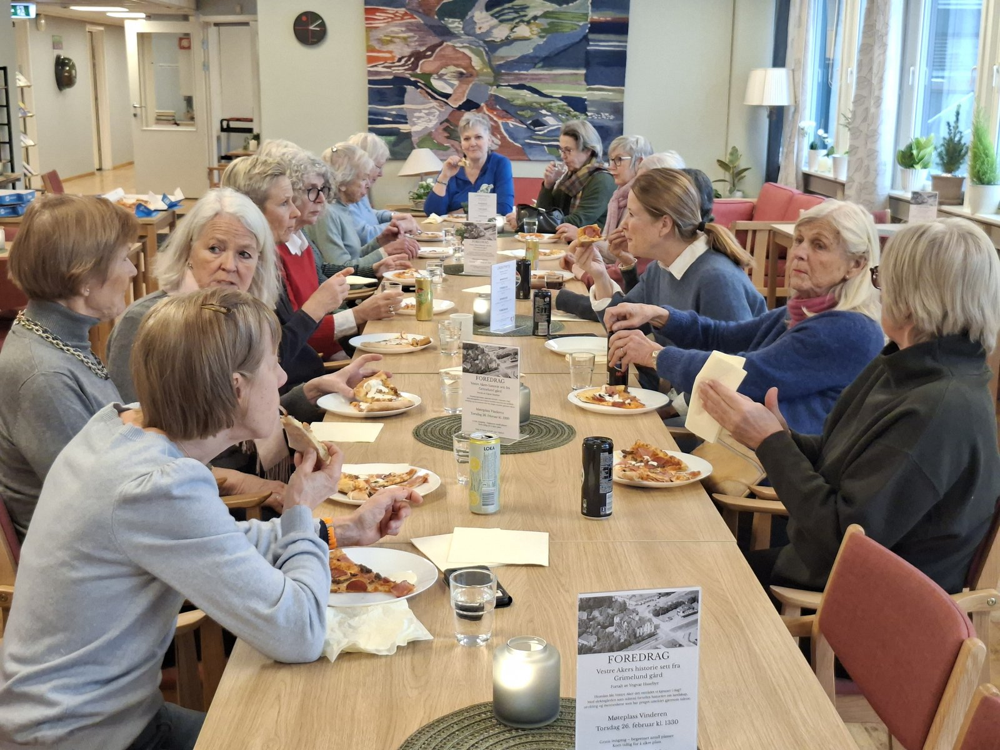
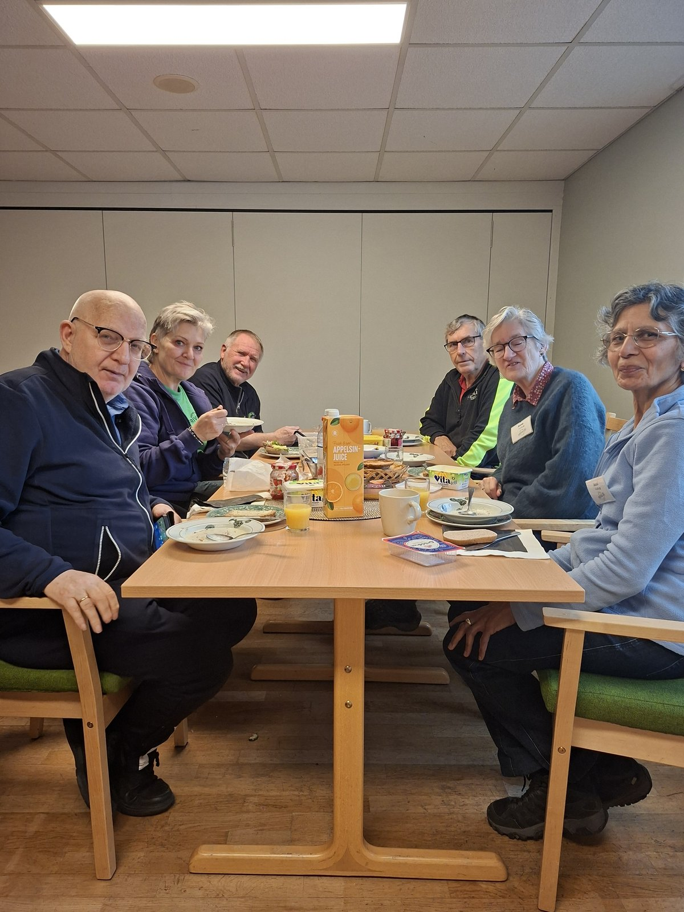

Kort stedsnavn eller kategori
En overskrift som sier hva du får være med på
To eller tre setninger som beskriver oppdraget konkret. Skriv til leseren, ikke om aktiviteten. Unngå superlativer - si heller hva som faktisk skjer.
En kort trygghet, for eksempel: Du velger selv hvor ofte

Om oppdraget
En overskrift som svarer på hva dette er
Beskriv oppdraget i to-tre avsnitt. Hva gjør den frivillige? Hvem møter de? Hvor foregår det? Hvor lang tid tar det?
Vær konkret om rammene. Folk sier oftere ja når de vet hva de sier ja til.
En kort setning som fanger hva oppdraget betyr - for den frivillige eller for den som får besøk.
Det du får igjen
Hva du sitter igjen med
- Første punkt. En setning som utdyper.
- Andre punkt. En setning som utdyper.
- Tredje punkt. En setning som utdyper.

En trygg start
- Du får en gjennomgang før du begynner.
- Du godkjenner retningslinjene til Vestre Aker Frivilligsentral.
- Du signerer et taushetsløfte.
- Det kreves ikke politiattest til dette oppdraget.
Helt uforpliktende
Har du lyst til å være med?
Fyll ut skjemaet, så tar vi kontakt. Ingenting er avtalt før vi har snakket sammen.
Har du spørsmål? Ring 23 22 05 80 eller send e-post til espen@vestreaker.frivilligsentral.no.
Passer ikke dette?
Vi har flere oppdrag, og det dukker opp nye hele tiden. Se hva du kan være med på.